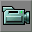

Apply The Texture
This is a Basic Procedure tutorial page. It explains how to perform a single procedure which is required in many different contexts.
Overview
One of the first things you will want to do, right after Create a room is apply a texture to a surface. There are a couple of different ways of doing it and they all have slightly different starting points. I'll cover as many as I can think of.
There are two things worth remembering about applying textures.
- You always have a single current texture, and the default texture is pretty ugly.
- If you have a surface selected when you change the current texture that surface's texture will also change. It can be quite easy to inadvertently change the texture on a surface this way.
Instructions
Changing the Current Texture
In order to change a texture of any surface in your map you need to set the current texture to the texture you wish to apply to the surface. To set the current texture we use the Texture Browser.
![[interface.toolbar]](images/interface-toolbar.png) |
To open the browser click on browser button 5. It looks like a painting and sites between the eye and the speaker buttons. This will open the texture browser, shown below.
![[interface-Ed3-texturebrowser]](images/interface-ed3-texturebrowser.png) |
By default the texture browser will only contain textures from the packages in your ServerPackages list. These are unlikely to be of much use to you in texturing your map. Gaining access to more useful textures is simply a matter of loading them.
Go Texture Browser Menu → File → Open and a file browser should open and automatically go to your UT\Textures directory. There should be a ton of files (texture packages) in here. Select a package you like the sound of, NaliCast.utx, for example and open it.
This will change the currently selected Texture Package (top drop list in the Texture Browser) to NaliCast, and the drop list (which displays the texture groups within the texture package) below it to Arch. You should see a whole bunch of new textures now. You can use the texture group drop list to view the other textures in the package as they were grouped by the package creator, or, by clicking on the All button you can view every single texture in the package. Note that not all texture packages group their textures.
Any texture you highlight in the main view of the Texture Browser will become the current texture.
Shortcut to Changing the Current Texture
If you hold down Alt and right-click on a surface in the 3D view, you will "pick up" the texture on the surface, changing the current texture to the one you just clicked on.
NOTE: This doesn't work in all tool modes (the clipping mode for example) so you may need to be in camera mode  to get this to work.
Applying the Current Texture to a Surface
The Long Winded Way
- In the 3D view of Unreal Ed left-click on the surface you wish to texture so that it is highlighted.
- Open the texture browser and select the texture you wish to apply to that surface.
A Quicker Way
- Right-Click on the surface you wish to texture (If the texture doesn't highlight then left-click on it first).
- Select the Apply Texture <current texture name> option at the bottom of the list.
The Quickest Way
- Hold down the Alt-Key and then, in the 3D view in Unreal Ed, left-click on the surface you wish to apply the current texture to.
NOTE: This doesn't work in all tool modes (the clipping mode for example) so you may need to be in camera mode to get this to work.
Other Things to Do in the Texture Browser
Other things you can try are to change the viewing size of the textures displayed. If you go to View → SetSize or View → Variable.
Using View → Docked will dock or undock it from the browser.
Changing the display size does not affect your textures in the game world. If you wish to do that see Decorating Rooms With Textures.
One useful feature of the Texture Browser is that the title of the browser window always displays the name of the current texture followed by it's width and height in UEd units. e.g. Arch2 (256x128)